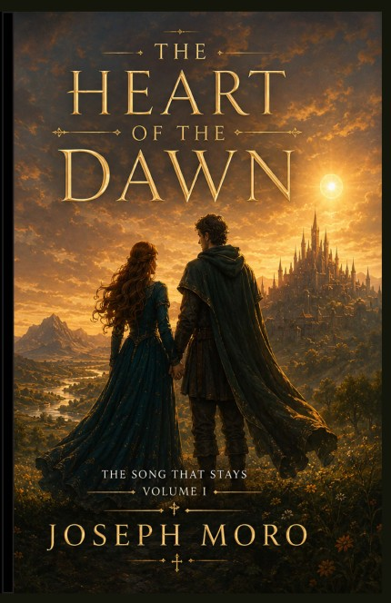
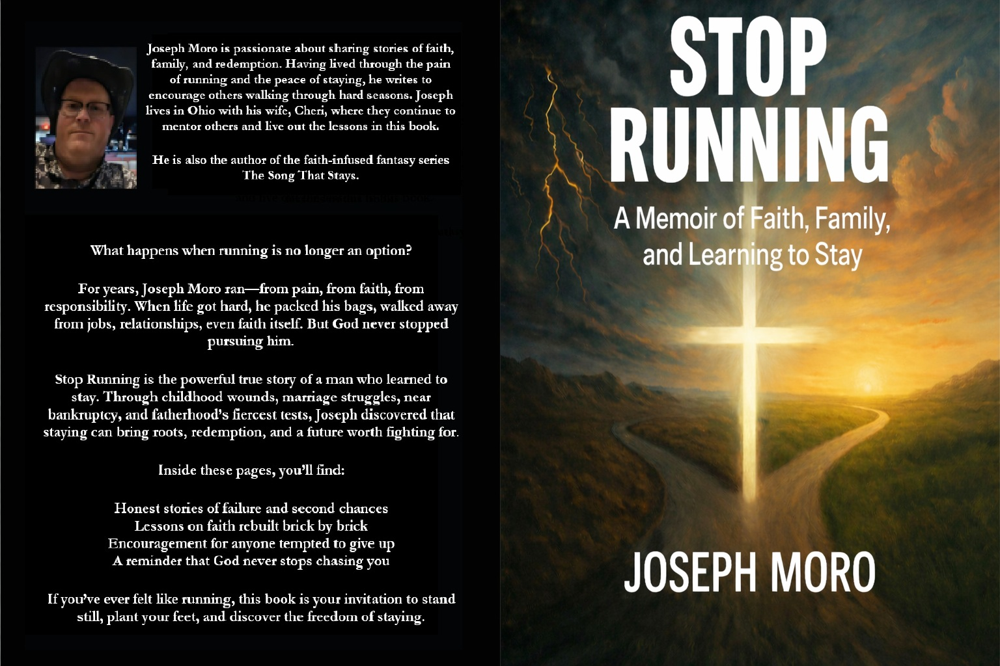

Fantasy Library
The Song That Stays
An epic fantasy world where love and sacrifice carry power, hidden histories shape the present, and every choice leaves an echo.

Faithheart
Echoes of the HeartsComing Winter 2026
Echoes of the Hearts
The next novel in The Song That Stays.